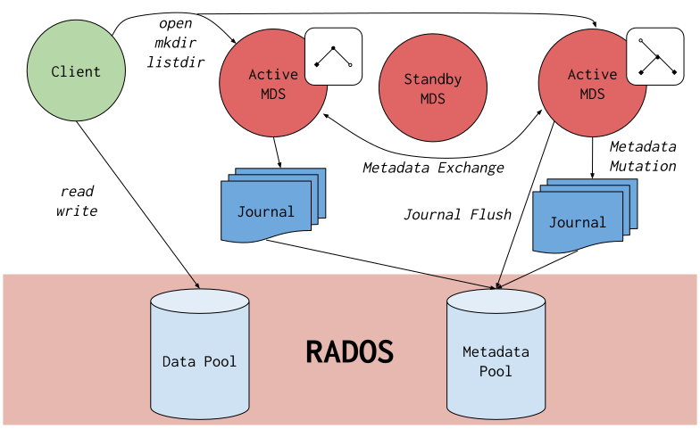

Notice
This document is for a development version of Ceph.
Ceph File System
The Ceph File System, or CephFS, is a POSIX-compliant file system built on top of Ceph’s distributed object store, RADOS. CephFS endeavors to provide a state-of-the-art, multi-use, highly available, and performant file store for a variety of applications, including traditional use-cases like shared home directories, HPC scratch space, and distributed workflow shared storage.
CephFS achieves these goals through novel architectural choices. Notably, file metadata is stored in a RADOS pool separate from file data and is served via a resizable cluster of Metadata Servers, or MDSes, which scale to support higher-throughput workloads. Clients of the file system have direct access to RADOS for reading and writing file data blocks. This makes it possible for workloads to scale linearly with the size of the underlying RADOS object store. There is no gateway or broker that mediates data I/O for clients.
Access to data is coordinated through the cluster of MDS which serve as authorities for the state of the distributed metadata cache cooperatively maintained by clients and MDS. Mutations to metadata are aggregated by each MDS into a series of efficient writes to a journal on RADOS; no metadata state is stored locally by the MDS. This model allows for coherent and rapid collaboration between clients within the context of a POSIX file system.

CephFS is the subject of numerous academic papers for its novel designs and contributions to file system research. It is the oldest storage interface in Ceph and was once the primary use-case for RADOS. Now it is joined by two other storage interfaces to form a modern unified storage system: RBD (Ceph Block Devices) and RGW (Ceph Object Storage Gateway).
Getting Started with CephFS
For most deployments of Ceph, setting up your first CephFS file system is as simple as:
# Create a CephFS volume named (for example) "cephfs":
ceph fs volume create cephfs
The Ceph Orchestrator will automatically create and configure MDS for your file system if the back-end deployment technology supports it (see Orchestrator deployment table). Otherwise, please deploy MDS manually as needed. You can also create other CephFS volumes.
Finally, to mount CephFS on your client nodes, see Mount CephFS: Prerequisites page. Additionally, a command-line shell utility is available for interactive access or scripting via the cephfs-shell.
Brought to you by the Ceph Foundation
The Ceph Documentation is a community resource funded and hosted by the non-profit Ceph Foundation. If you would like to support this and our other efforts, please consider joining now.